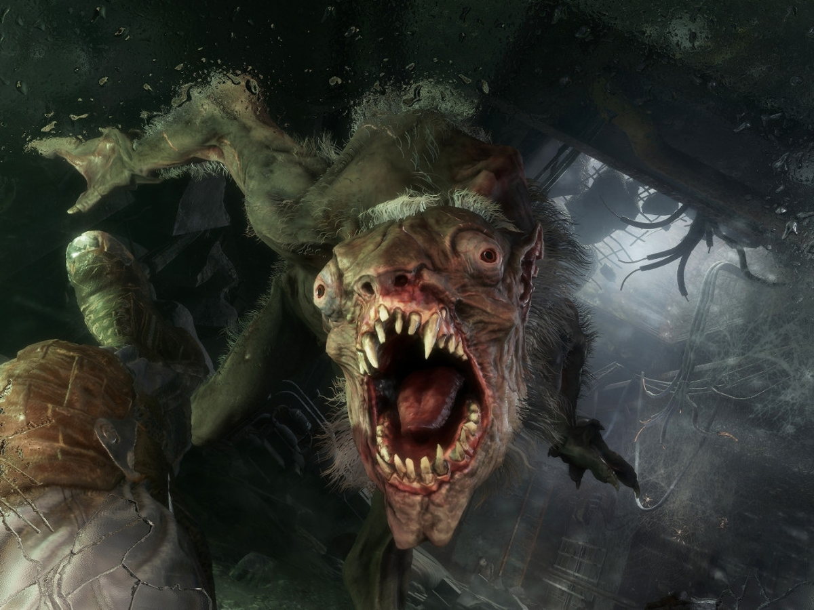

Aleksei decide correr, sin pensarlo dos veces, se lanza a la carrera, tratando de alejarse lo más rápido posible de los ruidos extraños que escuchó. A medida que corre, siente que algo lo persigue, pero no se atreve a mirar hacia atrás. El corazón le late con fuerza en el pecho, y la adrenalina lo impulsa a seguir adelante. Al voltear a ver, se da cuenta que está siendo perseguido por un nosalis. Por lo que decide abrir fuego contra él, aunque no tiene muchas balas, al menos podría retrasarlo un poco. Luego de un par de disparos, la bestia cae al suelo con un fuerte grito de dolor. Sin embargo, no concideró la posibilidad de que lo estén persiguiendo varios enemigos. Por lo que, Aleksei termina por ser acorralado por un grupo de nosalis que lo atacan sin piedad. Quizás correr no fue la mejor opción después de todo, pero en ese momento, Aleksei solo quería alejarse de los ruidos extraños y no pensó en las consecuencias de sus acciones. Por lo que termina desapareciendo en los tuneles, como aquellas personas que decidió buscar.
